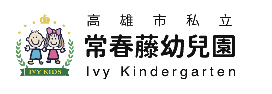

只做手機版 · 390 × 844
近期活動換成活動影片，
最新消息改上下排列。
第二輪 D：影片用 B 中央聚焦＋參考圖的白色圓點；消息不再輪播。
第一輪 A／B／C 三種換頁方式保留在「第一輪比較」。
每支手機可以直接用滑鼠拖曳、點按鈕，或聚焦後按 ← →手機框內可上下捲動

常春藤 · 近期活動與最新消息只做手機版 · 390 × 844
第二輪 D：影片用 B 中央聚焦＋參考圖的白色圓點；消息不再輪播。
第一輪 A／B／C 三種換頁方式保留在「第一輪比較」。